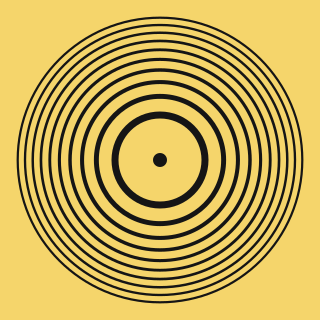
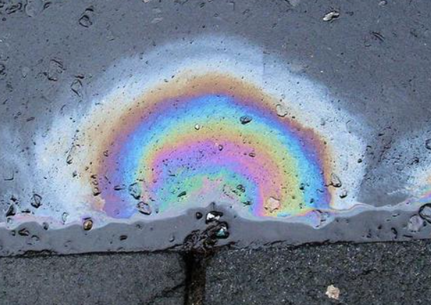
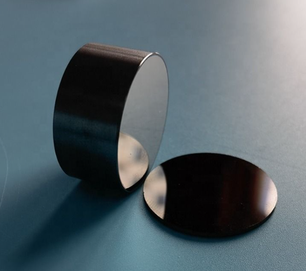
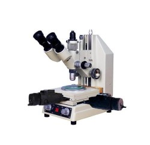
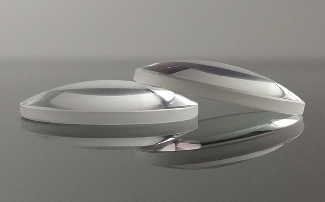
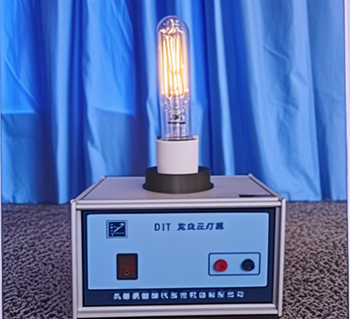
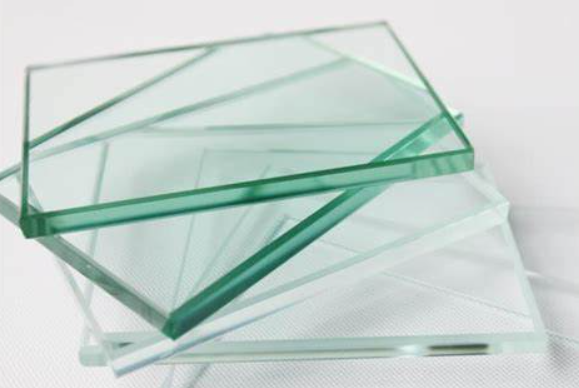

实验目的
1. 深入理解光的干涉现象，掌握等厚干涉的基本原理和形成条件
2. 了解牛顿环的形成机制，掌握干涉条纹与薄膜厚度的关系
3. 学会使用读数显微镜测量牛顿环直径，掌握精密测量技术
4. 通过逐差法和最小二乘法处理实验数据，计算球面透镜的曲率半径
5. 分析实验误差来源，培养科学严谨的实验态度和数据处理能力
6. 探索等厚干涉在现代科技中的应用，拓展科学视野
等厚干涉概述
什么是等厚干涉？
等厚干涉是光学干涉现象的一种重要形式，是指由同一光源发出的光波经透明薄膜上下表面反射后，在薄膜厚度相同的位置产生相同干涉条纹的现象。等厚干涉条纹的形状直接反映了薄膜厚度的分布情况，因此可以用来精密测量物体的表面形貌、厚度变化等。
等厚干涉的核心特征
- 同一条干涉条纹上各点对应的薄膜厚度相等
- 条纹形状反映薄膜厚度的空间分布
- 相邻条纹对应的厚度差为半个波长
- 可用于精密测量表面平整度、楔角、曲率半径等
等厚干涉的典型应用
牛顿环实验
测量透镜曲率半径
检验光学元件表面质量
楔形薄膜干涉
测量微小厚度
薄膜厚度均匀性检验
干涉测量技术
表面形貌测量
精密位移传感
光学镀膜检测
镀膜厚度监控
光学薄膜质量控制
历史背景与理论基础
1. 牛顿环的历史
牛顿环现象由艾萨克·牛顿（Isaac Newton）于1717年在其著作《光学》（Opticks）中首次系统描述。牛顿通过实验观察到当凸透镜与平面玻璃接触时产生的同心彩色环状干涉图样，并对这一光学现象进行了深入研究。这一发现为波动光学理论奠定了重要基础。
牛顿环实验是光学干涉现象的经典案例，展示了光作为波的本质特性。虽然牛顿本人支持光的微粒说，但他的这一实验却为后来发展的光的波动理论提供了有力证据。

2. 光的干涉理论
干涉是两列或多列相干光波相遇时，由于相位差而产生的光强增强或减弱的现象。当两束相干光波叠加时：
相长干涉
相消干涉
- 相长干涉：当光程差为波长的整数倍（或相位差为2π的整数倍）时，波峰与波峰重合，光波振幅增强，形成亮条纹
- 相消干涉：当光程差为半波长的奇数倍（或相位差为π的奇数倍）时，波峰与波谷重合，光波振幅减弱，形成暗条纹
其中，Δφ为相位差，ΔL为光程差，λ为波长
3. 薄膜干涉
牛顿环属于薄膜干涉的一种特殊情况。薄膜干涉是指光在薄膜上下表面反射形成的干涉现象。除牛顿环外，常见的薄膜干涉还包括：
肥皂泡干涉
肥皂泡表面的彩色条纹
油膜干涉
水面油膜的彩色图案
光学镀膜
镀膜元件的干涉现象
肥皂泡表面的薄膜干涉现象

水面油膜产生的彩色干涉图案

光学元件表面镀膜的干涉效应
4. 等厚干涉与等倾干涉
光学干涉可分为两类：
- 等厚干涉：牛顿环属于等厚干涉，指入射光通过厚度逐渐变化的薄膜时产生的干涉
- 等倾干涉：如迈克尔逊干涉仪中，指入射角不同但通过相同厚度薄膜的光产生的干涉
等厚干涉示意图
等厚干涉中，薄膜厚度沿空间坐标变化，而入射角保持不变。如图所示，光线穿过厚度不同的薄膜区域，在不同位置产生不同的光程差，从而形成干涉条纹。
等倾干涉示意图
等倾干涉中，薄膜厚度相同，但光线以不同角度入射。不同入射角导致不同的光程差，从而在观察面上形成同心环状干涉条纹，每个环上的入射角度相同。
牛顿环是等厚干涉的经典例子，干涉条纹对应着空气薄膜厚度相等的点，故称为"等厚干涉"。
实验仪器

牛顿环实验装置整体

平凸透镜（R=1~10m）

钠灯（λ=589nm）

平玻璃板
主要仪器设备：
- 平凸透镜：曲率半径通常在1000-10000 mm之间，是实验的核心部件
- 平玻璃板：与透镜接触形成空气薄膜
- 单色光源：常用钠灯（波长589 nm）作为光源
- 读数显微镜：用于精确测量牛顿环直径
- 支架和调节装置：用于固定和调整透镜位置
牛顿环干涉原理详解
1. 牛顿环物理原理
当平凸透镜放在平面玻璃板上时，透镜与平板间形成一个厚度从中心向外逐渐增大的空气薄膜。当单色光垂直入射时，光线在薄膜上下表面反射产生干涉，形成同心环状的干涉图样。
2. 空气膜厚度计算
如果透镜的曲率半径为 \(R\)，离中心距离为 \(r\) 处的空气膜厚度 \(t\) 可以计算为：
推导过程：根据圆的几何关系，设透镜球面的曲率半径为R，距离中心r处的空气膜厚度为t。由勾股定理可得：\(R^2 = r^2 + (R-t)^2\)，展开并忽略高阶小项t²，即可得到上述公式。
3. 光程差与半波损失
在牛顿环实验中，光程差的计算需要考虑半波损失：
什么是半波损失？
当光从光疏介质（折射率小）射向光密介质（折射率大）的界面反射时，反射光会发生相位突变π，相当于光程增加或减少半个波长，这种现象称为半波损失。
- 空气膜上表面反射：光从玻璃→空气，无半波损失
- 空气膜下表面反射：光从空气→玻璃，有半波损失
因此，反射光的总光程差为：
其中：2t为几何光程差，λ/2为半波损失项
4. 干涉条件
对于反射光：
注意：中心点总是暗的，因为透镜与平板接触处厚度t=0，光程差Δ=λ/2，满足相消干涉条件。
4. 干涉环半径计算
核心结论
暗环直径的平方 \(D_m^2\) 与环序号 \(m\) 成正比，比例系数为 \(4\lambda R\)。通过测量不同环的直径，可求得透镜曲率半径 \(R\)。
5. 实验操作步骤
将平凸透镜放在平板玻璃上，球面向下
使单色光垂直照射透镜
观察形成的同心环干涉图样
测量各暗环的直径
绘制环序号与直径平方的关系图，计算斜率
根据公式 \(D_m^2 = 4m\lambda R\) 计算曲率半径
6. 测量曲率半径
通过测量不同暗环的直径 \(D_m\)，绘制 \(D_m^2\) 与 \(m\) 的关系图，可得到一条斜率为 \(4\lambda R\) 的直线。由斜率可以计算出透镜的曲率半径：
环序号(m)与直径平方(Dm2)的线性关系图
实验数据处理方法
一、逐差法处理数据
逐差法是处理牛顿环实验数据的常用方法，可以有效消除系统误差：
选取第m环和第n环（m > n），则：
因此：
二、最小二乘法拟合
使用最小二乘法对\(D_m^2\)与m进行线性拟合，得到斜率k：
曲率半径计算：
三、实验步骤
四、误差分析
系统误差
- 透镜与平板接触不紧密
- 透镜表面存在灰尘或划痕
- 光源非严格单色
- 读数显微镜零点误差
随机误差
- 环纹定位不准
- 读数估读误差
- 环境振动影响
- 温度变化影响
五、提高测量精度的方法
多次测量取平均值
使用逐差法消除系统误差
选择较远的环进行测量
保持光学元件清洁
实验注意事项
数据拟合优化
直径差法：当环的中心位置不易确定时，可以采用直径差法计算
这种方法避免了中心确定误差的影响，可提高测量精度。
最小二乘法拟合时，可添加权重，使测量精度更高的外环数据获得更大权重。